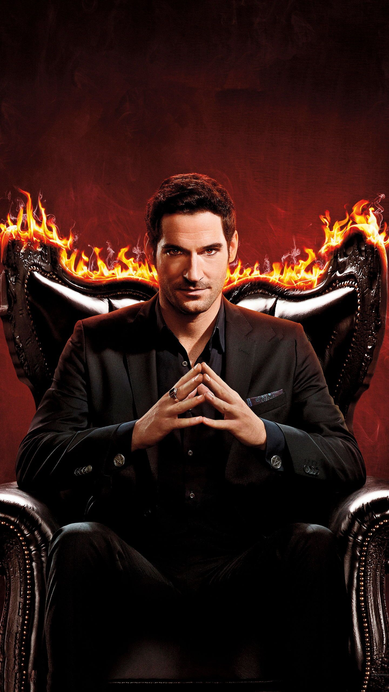
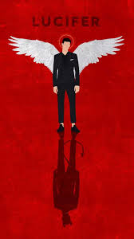

Séries Sombrias, Que nós Amamos!
Bem vindos queridos diabretes, estamos aqui hoje para mais uma de nossas críticas dessa vez sobre a série "Lucifer"!!!
ᨐᨐᨐᨐᨐᨐᨐᨐᨐᨐᨐᨐᨐᨐᨐᨐᨐᨐᨐᨐᨐᨐᨐᨐᨐᨐᨐᨐᨐᨐᨐᨐᨐᨐᨐᨐᨐᨐᨐᨐᨐᨐᨐᨐᨐᨐᨐᨐᨐᨐᨐᨐᨐᨐᨐᨐᨐᨐᨐᨐᨐᨐᨐᨐᨐᨐᨐᨐᨐ
Fechamentos dignos para todos os personagens
Por se tratar da sua última temporada, a série faz questão de fechar os arcos que ainda não haviam sido fechados anteriormente, como o romance de Mazikeen e Eva ou o “dedo podre” de Ella. Junto disso, ainda dá tempo para vermos um pouco mais do que aconteceu com Dan após seu trágico final na péssima segunda parte da quinta temporada. O policial acaba tendo um desenvolvimento muito interessante em seu arco, encerrando de vez e de uma forma bonita, sem a necessidade de um episódio inteiro completamente desnecessário (sim, estou falando novamente daquela horrível parte 2 da quinta temporada).
 Obviamente, o núcleo principal também se encerra, com Lucifer Morningstar e Chloe Decker chega no seu ápice como casal e parceiros, especialmente após a chegada de uma nova personagem que abala todas as circunstâncias, fazendo o antigo senhor do inferno se questionar sobre suas decisões para o futuro. Dito isso, toda a trama envolvendo esta nova personagem, vivida por Brianna Hildebrand (Deadpool), é uma excelente adição, servindo como excelente foco principal para o último ano da série. Além disso, o arco tem um dos fechamentos mais inteligentes de toda a série, revertendo qualquer expectativa que eu tinha em relação ao mesmo.
Copyright © 2022.